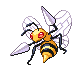

-
Bulbasaur #001

- Grama
- Veneno
Há uma semente de plantaem suas costasdesde o dia que este pókemon nasceu. A semente cresce lentamente.
-
Ivisaur #002

- Grama
- Veneno
Quando o bulbo em suas costas cresce, parece perder a capacidade de ficar em pé de suas patas traseiras.
-
Venusaur #003

- Grama
- Veneno
Sua planta floresce quando está absorvendo energia solar. Ele permanece em movimento para buscar a luz solar.
-
Charmander #004

- Fogo.
Tem preferencia por coisas quentes. Quando chove, diz-se que o vapor jorra da ponta da sua cauda.
-
Charmeleon #005

- Fogo.
Charmeleon é um Pokérmon reptiliano. Ele tem escamas vermelhas na sua parte inferior. Existe um chifre na parte de trás da cabeça. Ele tem olhos verdes e um focinho comprido.
-
Charizard #006

- Fogo.
Charizard é um Pokémon dracônico e bípede . É principalmente laranja com uma parte inferior creme do peito até a ponta da cauda. Tem um pescoço longo, pequenos olhos azuis, narinas ligeiramente levantadas e duas estruturas semelhantes a chifres saindo da parte de trás de sua cabeça retangular.
-
Squirtle #007

- Água.
Squirtle é baseado em uma tartaruga marinha. Tem uma pele azul claro e usa um casco e junto também tem uma calda longa azul.
-
Wartortle #008

- Água.
Wartortle Move Suas Orelhas Para Nadar Mais Rápido E, É Um Pokémon Muito Popular Como Um Animal De Estimação. E Na Sua Última Evolução Blastoise O Mais Forte De Todos É Super Popular, Tem Um Jatos Em Sua Concha Para Ataques Em Alta Velocidade, Seus Jatos São Sua Maior Arma.
-
Blastoise #009

- Água.
Blastoise possui uma variedade de habilidades e pode atrapalhar bastante a vida dos seus adversários. Ele também é focado em ataques de longa distância e, assim como os outros Pokémon normais, você precisa evoluí-lo
-
Caterpie #010

- Inseto.
Caterpie é uma larva verde e amarela, com anéis amarelos pelos segmentos do corpo. Possui olhos negros e amarelados e uma antena vermelha. Sua cauda também é amarelada.
-
Beedrill #0015
- Veneno.
- Inseto.
Tem três ferrões venenosos nas patas dianteiras e na cauda. Eles são usados para espetar seu inimigo repetidamente.